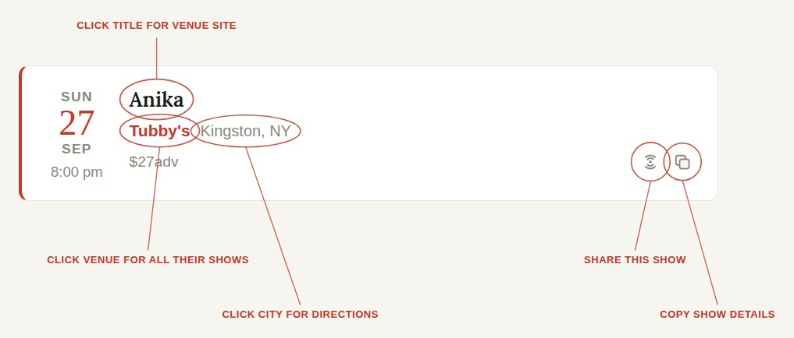
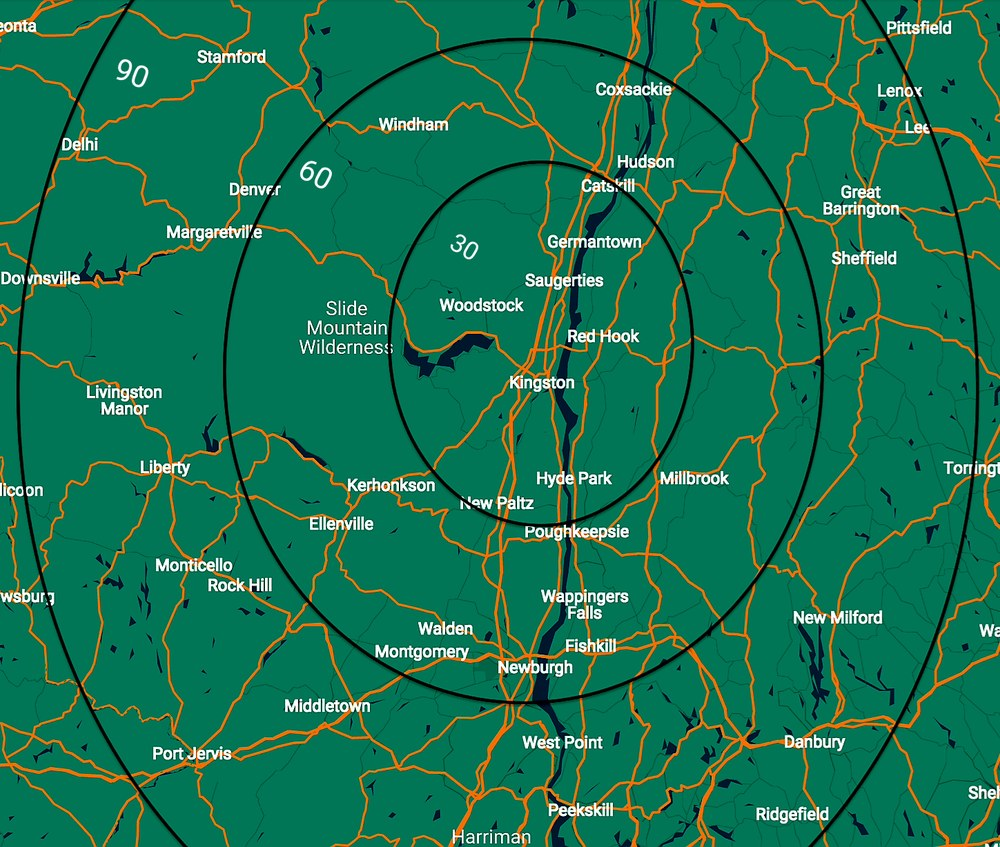

One place for live music in the Hudson Valley.
An independent calendar covering 100+ venues within 90 minutes of Kingston, NY. Updated daily. Nothing for sale.

The site uses Google Maps to give accurate driving distances to create a radius (not updated in real time for traffic or road closures). These drive times are calculated from midtown Kingston.

The Music page is the whole calendar in one place. Filter it by distance, by dates, by venue, or with a search, then pick how you want to look at it.
List is the quick view of every upcoming show. Feed scrolls through the posters one show at a time, Wall lays the posters out grouped by day, and Map pins shows on a map. Map placement is not exact: shows are grouped by town, so a pin marks the town rather than the venue's exact spot. There is also a slideshow that plays through the posters. Feed and Wall show the shows that have a poster, and more are added all the time.
The site remembers which view you used last and opens there next time.
Tap the heart on any show to save it. There are no accounts: your saved shows are kept on your own device, and you can bring them up any time with ♥ Saved. If you clear your browser's data, they go with it.
Tap the 📍 pin, put in your zip code, and the site will generate distances from your location instead of Kingston. Set it once and it applies to every view. This feature is less accurate than the site's default sorting — it uses straight-line distance, with some accounting for things like bridges and highways, but it's still just an estimate.
This page starts out looking exactly like the regular Music page, apart from a ★ in the header. Press it and a secret layer wakes up: a quote line and a clock line, a Fun drawer above the filters, little animals wandering the page, Ray in the corner, and a stubs badge. The ★ turns into an ✕. Press that to go back to the plain page. It reloads the page, so your filters reset, but your saved shows and your stubs stay.
Seven tabs, each one small and silly, and each one tied to the real listings:
Weather shows current conditions and a 5-day forecast for Kingston. Mood & Luck has three ways to let chance pick a show: pick a mood for the Mood of the Day, crack open a Fortune Cookie for a lucky show this week, or ask the Magic 8-Ball whether to go out tonight (it answers yes, maybe or no, and aims you at a real show either way). Daily serves a Drink of the Day and a Food of the Day, one of 500 each, paired with a show on the list; "find it below" jumps to that show. Pet Radar is Blip, a radar screen with feelings. Feed him when he's hungry and pat him once a day.
Games holds Snake, Pinball (Z and / flip, Space launches, N nudges, light S-H-O-W and lock two balls for multiball), Memory Match 10x (80 pairs) and Tetris: Book the Week, where every falling piece is a real listing and a full row books that day. Leaderboard is the wall of names, below. Venues lists every venue that ever had a show, with a link to its site and a magnifier that filters the list to just that venue.
Ray is the roadie in the bottom corner. Click him for a chat. Every so often he does something: DJs, does push-ups, takes a smoke break (and shows the Show of the Day), or gets mad. Click him in the middle of it for a bonus stub. Now and then the page itself wobbles, pixelates or warps for a moment. Hold the mouse down anywhere to scribble with a crayon; it all disappears when you reload.
With the Fun layer on, the Map view lives inside a handheld GPS. The arrow pad pans, ZOOM + and - zoom, PAGE re-fits the map, FULL takes it full screen (Esc comes back) and QUIT clears the selected town. As on the regular map, pins are grouped by town, not placed on the exact venue.
Almost everything above earns Stubs, named for ticket stubs: proof you showed up. Your total is shown next to the ✕. Click the badge to see your rank, today's progress and the full list of ways to earn. The big sources are Tetris rows, Memory Match, Pinball, Snake and feeding Blip. There are small daily stubs for the Magic 8-Ball, fortune cookie and mood pick, for a pat, for saving shows, for opening a map pin and for visiting each tab. Beating your own best score, catching Ray and scribbling a lot (a lot a lot: about 40,000 pixels of crayon) also pay. Every game except Memory Match has a daily cap so nobody can run away with it, and coming back on consecutive days adds up to +50%. Stubs are kept in your browser and don't follow you to another device.
Ranks, from the bottom: Wristband, Opener, Roadie, Sound Tech, Headliner, Legend, Hall of Famer, Immortal, Rock God, Living Myth, Constellation, and Heat Death of the Universe.
Reach 1,000 stubs and you can sign the leaderboard, in the drawer's Leaderboard tab or in the stubs panel. Your name can be up to 14 letters, numbers and spaces. You can sign only once, and the name can never be changed, so choose carefully. After that your score keeps itself up to date. The top 25 are shown. Big scores are shortened (1.2M, 3.4B) to fit. It runs on the honor system with a few sanity checks: duplicate and rude names are refused, and so are scores that couldn't have been earned in the time available.